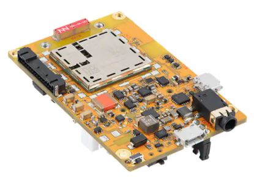
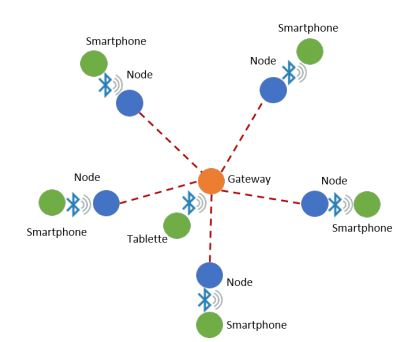

Notre solution
Voici un panorama des solutions implémentées.
Application
Application développée sous Android avec carte de France disponible offline

Microcontrôleur
Développement d'une application utilisant le BLE et le réseau GSM.

Architecture
Communication BLE entre le smartphone et le microcontrôleur et communication par SMS entre node et gateway. Echange des coordonées GNSS et message SOS.
MS Project
Gestion du projet via cet outil pour gestion des tâches et ressources